Menu - Standard template allows you to arrange the screen structure and create multiple categories. It can contain up to 8 direct child objects, which can be of any template category, including Menu - Standard templates.
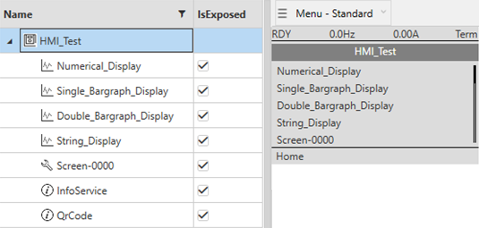
The numerical value of your variable.
The minimum and maximum value of your variable.
The unit of your variable.
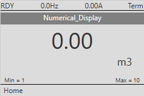
Configuration: To configure the screen, use the Min,Max and Unit columns in the configuration view.
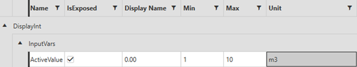
Additional units can be created, if needed.
The Display Name is not editable (the name of the variable is taken from the template).
IsExposed attribute allows to show or hide the value on the deployed display configuration.
Overview: The Single Bargraph screen template Provides a comprehensive visualization of a single value with a dynamic bar moving between the minimum and maximum values. It displays the following data:
The value of your variable.
The minimum and maximum value of your variable.
The unit of your variable.
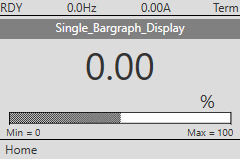
Configuration: To configure the screen, use the Min, Max and Unit columns in the configuration view.
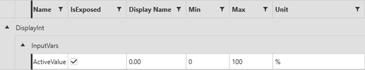
Additional units can be created, if needed.
The Display Name is not editable (the name of the variable is taken from the template).
IsExposed attribute allows to show or hide the value on the deployed display configuration.
Overview: The Double Bargraph screen template Provides a comprehensive visualization of two values with two dynamic bars moving between the minimum and maximum values. It displays the following data:
The value of your variable.
The minimum and maximum value of your variable.
The unit of your variable.
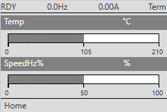
Configuration: To configure the screen, use the Display Name,Min, Max and Unit columns in the configuration view.
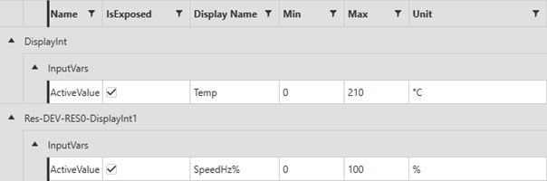
Additional units can be created, if needed.
Display Name is editable, to customize each value name (the name of the variable is not inherited from in the Menu template).
IsExposed attribute allows to show or hide the value on the deployed Display configuration.
Overview: The display string allows you to display a string on one or two lines of 20 characters each. The characters ;; are used as a line break between the 2 lines. As the display is only 2 lines, only one set of ;; is allowed.
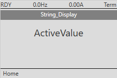
Configuration: To configure the screen, use the Display Name column to rename the page in the configuration view.
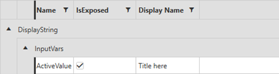
Display Name is editable, allowing you to customize each variable name. The name of the variable is not taken from the Menu template.
IsExposed attribute allows to show or hide the value on the deployed Display configuration.
Overview: The display boolean allows you to create a monitoring interface for boolean values, which can be used in the application.
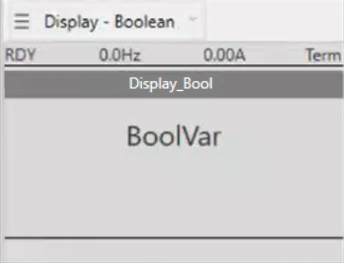
Configuration: To configure this screen, use the columns in the configuration view.
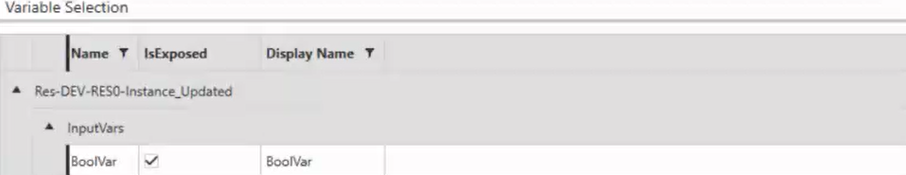
IsExposed attribute allows to show or hide the value on the deployed Display configuration.
Display Name is editable, allowing you to customize each variable name. The name of the variable is not taken from the Menu template.
Overview: The dashboard template displays mixed information in one display, allowing you to group data on a single screen. Dashboards support both display and setting data.
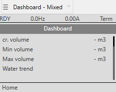
The dashboard template supports up to 8 pages. To configure a page, simply drag and drop any CAT instance and select the values you want to display., then, in the configuration view, choose the display type based on the data type you have selected.
The menu, dashboard, and double bargraph templates are not supported by dashboards.
In the dashboard template the column is always used to set the name of the page.
Configuration: To configure this screen, use the columns in the configuration view. Refer to the specific template you are using to see which columns you can set.
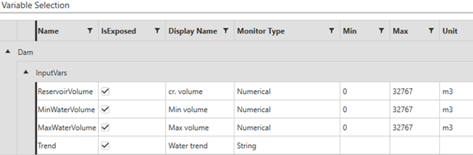
Additional units can be created, if needed.
Display Name is editable, to customize each value name.
IsExposed attribute allows to show or hide the value on the deployed Display configuration.
Overview: This template allows you to create a numerical interface in the application, it is used as an input for integer values.
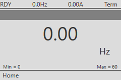
Configuration: To configure the screen, use the Min, Max, Unit and Step columns in the configuration view.
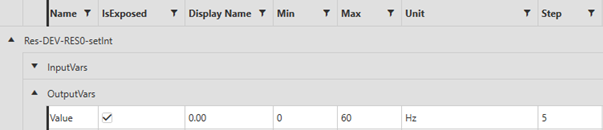
You can only use values in the section OutputVars.
Additional units can be created, if needed.
Display Name is not editable (the name of the variable is taken from the Menu template).
IsExposed attribute allows to show or hide the value on the deployed Display configuration.
Overview: This template allows you to create an input interface for boolean values, which can be used in the application.
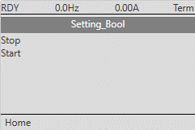
Configuration: To configure the labels associated with the Boolean value, use the False and True columns in the configuration view to specify different strings for the True and False states (e.g., True = Start; False = Stop).
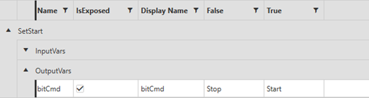
You can only use values in the section OutputVars.
Display Name is not actually displayed on the Graphic Display Terminal.
IsExposed attribute allows to show or hide the value on the deployed Display configuration.
Overview: The Info service template allows you to display 5 static labels of 23 characters each. The text is displayed when navigating manually to the specific screen in the tree.
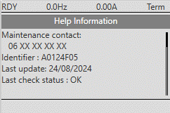
Configuration: To configure this screen, use the configuration view to write the string in the labels, set a name for the page and add and remove labels with icons
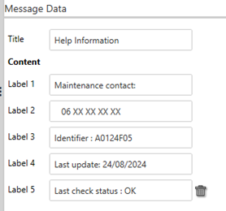
Overview: The Info QR Code template allows you to display a custom QR code that can contain up to 106 characters. The QR code is generated automatically from the URL or the data configured. It can be used to access the URL or the data from a mobile phone.
|
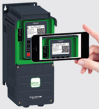 |
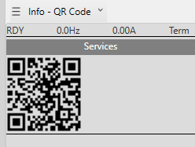 |
The QR code is displayed when navigating manually to the specific screen in the tree. It can be scanned with a mobile phone to access its data (URL or other).
Configuration: To configure it, use the configuration view to set the URL and the title of the screen.
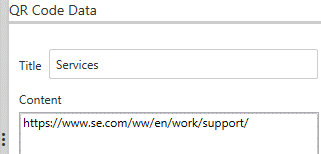